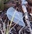
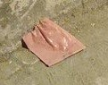
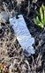
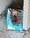
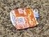
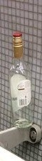
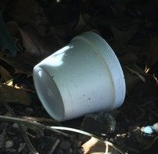

67.8%Exactitud Balanceada (9 grupos)Supera el 45.4% de Ciro v2 (+22.4 pp)
66.0%Exactitud Global Sonda Externa0.0% Sin detección · Macro-F1: 0.619
85.2%Acierto en Orgánicos (Marrón)Invariancia a escala de grises (Δ -1.2 pp)
93.2%mAP@0.5 en Peligrosos (Rojo)Test Split Independiente (2,003 imgs)
1 · Panel de Inferencia Web ONNX (100% Client-Side)
Muestras Reales del Dataset (Clic para clasificar con ONNX)

Blanco · plastico
Blanco · plastico
Azul · papel_carton
Azul · papel_carton Amarillo · metal
Amarillo · metal
Amarillo · metal
Gris · vidrio Gris · vidrio
Gris · vidrio Marrón · organico
Marrón · organico Marrón · organico
Marrón · organico Negro · otros_residuos
Negro · otros_residuos
Negro · otros_residuos Rojo · peligroso
Rojo · peligroso Rojo · peligroso
Rojo · peligroso2 · Contenedor NTP 900.058 Asignado y Probabilidades
Seleccione o suba una imagen
El modelo ONNX calculará en su navegador el contenedor oficial según la Norma Técnica Peruana NTP 900.058:2019.